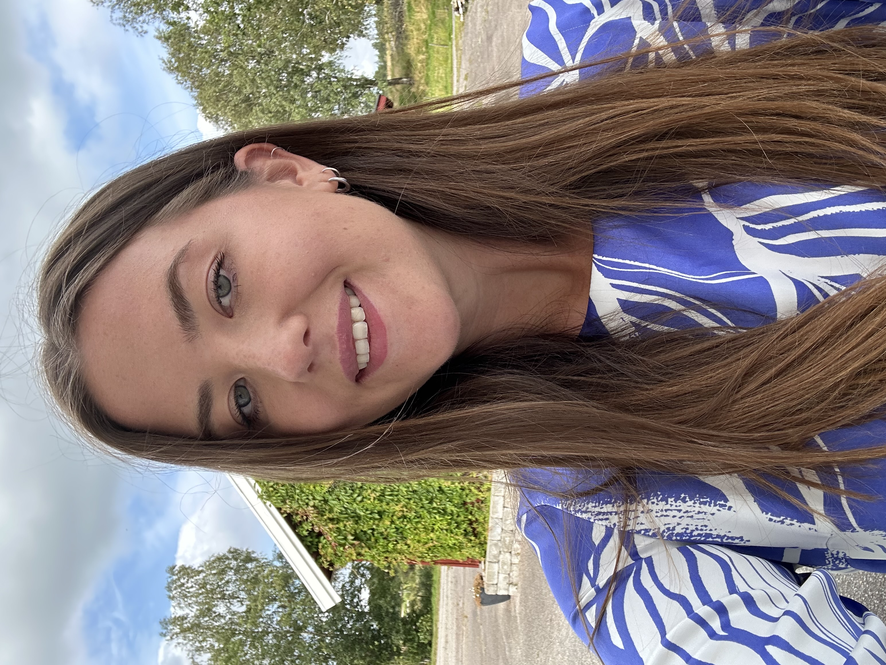

UX Designer · Portfolio 2026
A designer with a passion for users, data, and AI. I create data heavy products that users navigate with ease.
View my work
Background
Apr 2024 – Present
Working full-time with UX and product design, leading design processes from research and ideation through to delivery.
Aug 2021 – Apr 2024
Worked as an application specialist while transitioning into UX design. From January 2022, I took on UX responsibilities at 50%, building hands-on experience in interaction design alongside my core role. The role included owning client relationships, participating in system implementations and upgrades, and collaborating closely with developers.
2019 – 2021
Two-year master's programme in industrial design engineering with a 60 credit master's thesis.
2016 – 2019
Three-year bachelor's programme in design and product development.
Work
All projects are confidential and have been anonymised for the purpose of being included in this portfolio.
Lead Designer / 2025–Present
A digital solution for automated customer verification, focusing on creating efficient workflows and a clear, user-friendly interface for handling complex data.
Design System / 2025
From building component libraries in Figma to defining style guides and documenting best practices. I also designed an internal documentation site to support consistency and collaboration across teams.
UX Design / 2024
UX research and usability efforts, working closely with diverse user groups to ensure the product meets real user needs and is inclusive, accessible, and easy to navigate.
About Me
Hello!
I'm a UX designer with four years of experience, and what gets me out of bed in the morning is a good complex problem. There's something deeply satisfying about taking a product full of heavy data and dense workflows, and turning it into something that just feels easy to use.
I'm also a bit obsessed with the craft itself. Clean, crisp interfaces that look as good as they work. Getting the space to be creative and care about the details is something I never take for granted.
I also just really thrive when collaborating with people. It's where I do my best work. I believe that the best outcomes come when everyone's pulling together, and that's the kind of team I love being part of.
Outside of work, basketball has been a big part of my life for almost 18 years. I played at a professional level earlier on, and I'm still active in a club today, where I also happen to be chairperson.
Elin Ljungberg